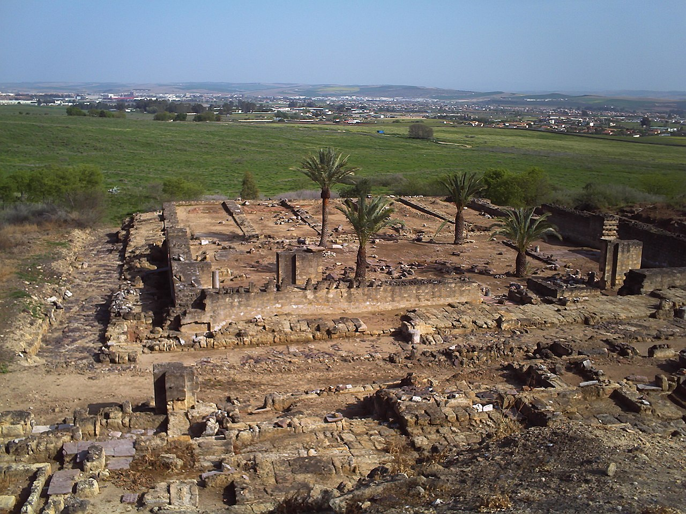
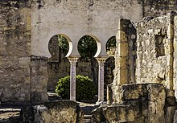

Medina Azahara

Los principales motivos de su construcción son de índole político-ideológica: la dignidad de califa exige la fundación de una nueva ciudad, símbolo de su poder, a imitación de otros califatos orientales y sobre todo, para mostrar su superioridad sobre sus grandes enemigos, el recién instaurado Califato fatimí de Ifriqiya, la zona norte del continente africano. Además de oponentes políticos, lo eran también en lo religioso, ya que los fatimíes, chiíes, eran enemigos de los omeyas, mayoritariamente de la rama islámica suní.
Historia

En el año 750 la dinastía de los Omeyas, que había gobernado el mundo islámico, fue derrocada del Califato de Damasco por los abasíes. Abderramán I el Emigrado, siendo miembro superviviente de los Omeyas, huye a Al-Ándalus proclamando el Emirato de Córdoba en 756 independiente de la nueva capital abasí, Bagdad.
Sin embargo, Abderramán I nunca se proclamó califa, acto que sí realizó uno de sus sucesores, el octavo emir, Abderramán III, en el año 929, después de acabar con la inestabilidad política del emirato (principalmente la revuelta de Omar ben Hafsún), lo que conllevó el mayor esplendor político, social y económico de la España musulmana, haciendo de la ciudad de Córdoba la más avanzada de Europa y el asombro del mundo.
En el año 750 la dinastía de los Omeyas, que había gobernado el mundo islámico, fue derrocada del Califato de Damasco por los abasíes. Abderramán I el Emigrado, siendo miembro superviviente de los Omeyas, huye a Al-Ándalus proclamando el Emirato de Córdoba en 756 independiente de la nueva capital abasí, Bagdad.
Sin embargo, Abderramán I nunca se proclamó califa, acto que sí realizó uno de sus sucesores, el octavo emir, Abderramán III, en el año 929, después de acabar con la inestabilidad política del emirato (principalmente la revuelta de Omar ben Hafsún), lo que conllevó el mayor esplendor político, social y económico de la España musulmana, haciendo de la ciudad de Córdoba la más avanzada de Europa y el asombro del mundo.
Arquitectura

Debido a la topografía del suelo, que se encuentra en pendiente, la ciudad se construyó sobre tres terrazas superpuestas, que correspondían a tres partes de la ciudad separadas por muros. La residencia califal dominaba toda el área desde la terraza superior situada al norte. La explanada media albergaba la administración y las viviendas de los más importantes funcionarios de la corte. La inferior estaba destinada a la gente del pueblo y los soldados, allí se encontraban la mezquita, los mercados, los baños y también los jardines públicos.
Debido a la topografía del suelo, que se encuentra en pendiente, la ciudad se construyó sobre tres terrazas superpuestas, que correspondían a tres partes de la ciudad separadas por muros. La residencia califal dominaba toda el área desde la terraza superior situada al norte. La explanada media albergaba la administración y las viviendas de los más importantes funcionarios de la corte. La inferior estaba destinada a la gente del pueblo y los soldados, allí se encontraban la mezquita, los mercados, los baños y también los jardines públicos.